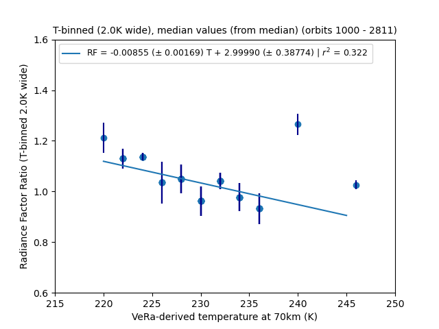
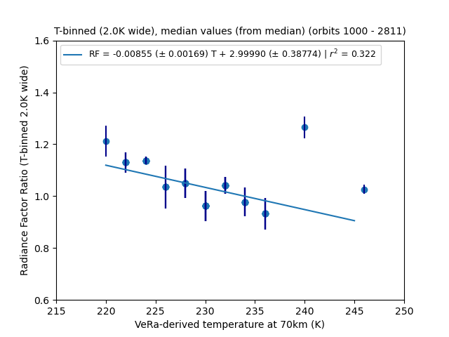

Workbook
abbreviations
VEX Orbit IDs
The information about the orbit IDs per mission section comes from the file
SOMEWHEREONYOURCOMPUTER/Data/VEX/VEX-SCIOPS-LI-053_1_1_VEX_Orbit_Date_DOY_Listing_2014Sep15.numbers,
see also the link to Venus Express at the ESA PSA.
mission section |
orbit ID range |
date range |
|---|---|---|
Nominal mission |
0001 - 0547 |
20-04-2006 - 20-10-2007 |
Extension 1 |
0548 - 1135 |
21-10-2007 - 30-05-2009 |
Extension 2 |
1136 - 1583 |
31-05-2009 - 21-08-2010 |
Extension 3 |
1584 - 2451 |
22-08-2010 - 05-01-2013 |
Extension 4 |
2452 - 3575 |
06-01-2013 - 31-12-2015 |
SPDC |
2775 - 2811 |
25-11-2013 - 31-12-2013 |
Temperature vs UV-brightness
The goal of this project is to investigate whether there is any relation between the atmospheric temperature as measured by means of radio occultation experiments and the UV-brightness as measured from images in the UV.
I started this project with Colin Wilson at Oxford in 2015. At the time, I wrote all scripts using Interactive Date Language (IDL). At this point (2024) I redo the entire analysis, rewriting all code using Python, documenting the process and the code as thoroughly as possible.
We use Venus Express VeRa and VMC data.
VEX-VeRa data
Files are found in VeRa.
Step 01 - Extract VeRa-profiles information
directory, scripts & files
VeRa/Step01./scripts/VeRa_LocalSolarTime_CreateTable.py./scripts/VeRaProfiles_Lon-Lat_LST-Lat_Figure.pyVeRa_LocalSolarTime_OneBarLevel_PerOrbit_SPoleProfiles.datVeRa_LocalSolarTime_OneBarLevel_PerOrbit_SelectedProfiles.datUsing the VeRa_LocalSolarTime_CreateTable.py script, I create two tables that list the orbit ID, Day Of Year, time of observation, Local Solar Time, latitude, longitude and solar zenith angle at the one bar level for each of the VeRa soundings used in this project.
The table VeRa_LocalSolarTime_OneBarLevel_PerOrbit_SPoleProfiles.dat contains this information for all the selected profiles from the SPDC (orbits 2775 - 2811).
The table VeRa_LocalSolarTime_OneBarLevel_PerOrbit_SelectedProfiles.dat contains this information for all the selected profiles from the mission before the SPDC. (first included orbit 0260, last included orbit 2638).
With the VeRaProfiles_Lon-Lat_LST-Lat_Figure.py I create two plots, showing the distribution of the VeRa sounding locations on the Venus disk and as a function of LST:
{kind=link}

Step 02 - Filter VeRa profiles
directory, scripts & files
VeRa/Step02./scripts/VeRaAverageProfiles_CreateNumpyArray.py./scripts/VeRaAverageProfile_Tz_dTdz_Figure.pyVeRaSelectedProfiles.profilesVeRaSouthPolarDynamicsCampaignProfiles.profilesWe believe that a vertical resolution of 1km for the temperature profiles is sufficient for our purposes. Depending of the altitude of sounding, the VeRa profiles have a (much) higher vertical resolution. I create vertically averaged profiles, where I average the temperatures values in vertical bins of one kilometer wide. I take the standard deviation in each bin to be the uncertainty of the average temperature for that bin. If there is only one value in the bin, then the uncertainty is not calculated (set to NaN). This occurs higher in the atmosphere, above 80km altitude, a region that is not important for this study.
The getFilteredVeRaProfile() method is designed to create a filtered (vertically averaged) profile from an original VeRa profile.
I use the default settings to calculate profiles between 6098km and 6154km (56 levels) at a 1km vertical resolution.
Note
Radius of Venus = 6051.8km, we adopt 6052km, hence 6098km ~ 48km altitude.
As an example, I create two plots (T-z and dT/dZ - z) to show the results for the last VeRa profile from the South Polar Dynamics Campaign (./scripts/VeRaAverageProfile_Tz_dTdz_Figure.py, also see Step02bis for details on the .profiles files):

(left) Averaged temperature profile between 50 and 100km altitude and original VeRa profile; (middle) uncertainty (standard deviation) in the temperature as explained in the text above. The gaps are due to missing point, when the uncertainty is set to NaN, because there is only one temperature value in a vertical bin; (right) number of original VeRa temperatures for each vertical bin, in red are indicated levels with only one temperature value.
{kind=link}
Step 02bis - the .profiles files
In order to make it easier to access all the filtered profiles at once, without the need to recalculate each one of them,
I use the ./scripts/VeRaAverageProfiles_CreateNumpyArray.py script to load the desired original VeRa profiles, filter them and store the results in a Python dictionary variable, which is written to two NumPy files using the np.save function:
VeRaSelectedProfiles.profilesVeRaSouthPolarDynamicsCampaignProfiles.profiles.profilesEach file is a Python dictionary with the following structure:
{ 'OrbitID' : [],
'ProfileID' : [],
'LatitudeOneBar' : [],
'LongitudeOneBar' : [],
'DayOfYear' : [],
'TimeOfDay' : [],
'LocalSolarTime' : [],
'FilteredProfiles' : [],
'NumberOfFilteredLevels' : [],
'OriginalProfiles' : [],
'NumberOfOriginalLevels' : [] }
Each key in the dictionary corresponds to a list of the variables as indicated by the key. The length of each list for each key is of course the same and all elements at the same index in the lists correspond to each other.
They can be read with the following command:
[1] profilesDictionary = np.load ('VeRaSouthPolarDynamicsCampaignProfiles.profiles', allow_pickle = True).tolist ()
As an example, corresponding to the figures in VeRaStep02:
profilesDictionary ['OrbitID'][-1]: '2811' # strprofilesDictionary ['ProfileID'][-1]: 'V32ICL2L04_AEX_133650732_60.TAB' # strprofilesDictionary ['LatitudeOneBar'][-1]: -55.5 # float; unit ˚`profilesDictionary ['LongitudeOneBar'][-1]: 63.14 # float; unit ˚`profilesDictionary ['DayOfYear'][-1]: '2013-12-31 # strprofilesDictionary ['TimeOfDay'][-1]: 7.955436944444445 # float; unit hoursprofilesDictionary ['LocalSolarTime'][-1]: 16.07 # float; unit hoursprofilesDictionary ['FilteredProfiles'][-1]: # list of 10 lists(first element of return of VeRaTools.getFilteredVeRaProfile)profilesDictionary ['NumberOfFilteredLevels'][-1]: 56 # int(second element of return of VeRaTools.getFilteredVeRaProfile)profilesDictionary ['OriginalProfiles'][-1]: # list of seven lists(first element of return of VeRaTools.readVeRaTAB)profilesDictionary ['NumberOfOriginalLevels'][-1]: 643 # int(second element of return of VeRaTools.readVeRaTAB)
VEX-VMC data
directory, scripts & files
VMC/./scripts/workingWithPlanetaryImages.pyReading PDS3 images with Python
The VMC PDS files are in PDS3 format. A search for a Python module to read these files leads to planetaryimage. It is older software, I see that the latest update recorded on the website is from 26 March 2016 (20160326), but for my purposes it is exactly what I need. After all, the PDS files are from that same time period. I install the module with:
pip install planetaryimage
I also retrieve the source code from Github and park it in VMC/planetaryimage-master. I compile the documentation locally.
I try it out with the Python script ./scripts/workingWithPlanetaryImages.py:
from planetaryimage import PDS3Image
import matplotlib.pyplot as plt
VMCimage = PDS3Image.open ('/Users/maarten/Science/Venus/Data/VEX/VMC/Orb0085/V0085_0000_UV2.IMG')
VMCimageGEO = PDS3Image.open ('/Users/maarten/Science/Venus/Data/VEX/VMC/Orb0085/V0085_0000_UV2.GEO')
plt.figure (1)
plt.clf ()
plt.title ('.../Temperature-UVBrightness-Project/VMC/Orb0085/V0085_0000_UV2.IMG')
plt.imshow (VMCimage.image)
plt.savefig ('V0085_0000_UV2.png')
# datetime object
print ( "VMCimageGEO.label ['START_TIME']", VMCimageGEO.label ['START_TIME'] )
print ( 'day = {}, hour = {}'.format (VMCimageGEO.label ['START_TIME'].day, VMCimageGEO.label ['START_TIME'].hour))
plt.figure (2)
plt.clf ()
plt.title ('latitude plane index [3]')
plt.imshow (VMCimageGEO.data [3], vmin=-90, vmax=90)
plt.savefig ('V0085_0000_UV2_latitude.png')
Execution leads to:
In [1]: run workingWithPlanetaryImages.py
VMCimageGEO.label ['START_TIME'] 2006-07-14 16:15:31+00:00
day = 14, hour = 16
{kind=link}

Calibration of VMC images
The calibrated radiance factor \(RF_{x,y}\) for a valid (= on Venus disk) pixel \((x,y)\) in a VMC image is:
where \(\beta\) is the calibration correction factor (see Shalygina et al. 2015, their Table 1), \(R_{observed - x,y}\) is the value at the pixel in ADU times the radiance scaling factor read from the VMC image header (VMCImage.label ['RADIANCE_SCALING_FACTOR'].value, when read with planetaryimage module in Python) in \(W/m^2/\mu m/ster/ADU\), \(d_{Venus}\) is the distance of Venus to the Sun in AU and \(S_{Sun}\) the solar flux in \(W/m^2/\mu m\) at 1AU (see Lee et al. 2015 their Equation 2).
For \(S_{Sun}\) (from Lee et al. 2015 their Equation 1):
I determined the \(S_{irradiance}\) using the Solar Spectra website and the transmission function of the UV filter of the VMC camera (Markiewicz et al. 2007 their Figure 3):
{kind=link}
{kind=link}
My parametrisation of the UV part of Figure 3 from Markiewicz et al. 2007
This results is \(S_{Sun} = 1081 W/m^2/\mu m\).
The value of \(d_{Venus} = 0.723AU\) to within 1% in \(d_{Venus}^2\) over the orbit of Venus. I therefore consider this value a contant.
Step 01 - Select & process VMC images
directory, scripts & files
VMC/Step01./scripts/VMCImagesEvaluate.pyVMCSelectedImages.datVMCSelectedImages.iValidPointsI have carefully looked at the process I developed and followed in 2015 using IDL-scripts. Here I redo everything with Python.
The first step is to select all the VMC images that are useful for the analysis. The criterium is that at the time the VMC image was taken, the wind advected area where the VeRa sounding was acquired on the same orbit is on the visible part of the Venus disk, i.e. I take pixels with a solar incidence angle < 89˚. The correction for wind advection is calculated by taking the average wind speed at the latitude of the VeRa sounding (at 70km altitude) times the time span between the VMC and the VeRa observation. Both zonal and meridional winds are taken into account. For this I parametrise the winds profile:
Parametrisation of the zonal and meridional wind.
Khatuntsev et al. (2013) report on the zonal and meridional wind profiles measured from VEX orbits up to 2299 (10-year period). They present the result in their figures 10(a) and (b): Mean zonal (a) and meridional (b) profiles of the wind speed derived over the period of 10 venusian years by manual cloud tracking. Error bars correspond to 99.9999% 5σ-x confidence interval based on the standard deviation of the weighted mean. Standard deviations are presented by shadowed areas.
They present the formulae (their Equations (1) and (2)) with which the winds have been calculated by comparing two images:
where the indices \(1\) and \(2\) refer to the first and second image, \(\lambda\) is the longitude and \(\theta\) the latitude. Since \(U\) is negative (see table below), it means the wind blows the clouds in the direction of smaller Venus longitudes.
From my (physical) notebook entry on 19-03-2015: the average zonal wind is determined from figure 10a in Khatuntsev et al. (2013) and can be parametrised as (\(U\) in units of m/s):
Latitude range (˚) |
wind parametrisation (m/s) |
notes |
|---|---|---|
(-75˚, -50˚] |
\(U({\theta})\) = -94 + (\({\theta}\) + 50) * (65.6/-25) |
also use for latitudes down to -90˚. |
(-50˚, -40˚] |
\(U({\theta})\) = -101.5 + (\({\theta}\) + 40) * (7.5/-10) |
|
(-40˚, -15˚] |
\(U({\theta})\) = -93 + (\({\theta}\) + 15) * (-8.5/-35) |
|
(-15˚, 0˚] |
\(v{\theta})\) = -93 |
{kind=link}
Khatuntsev et al. (2013) Figure 10a. Zonal wind parametrisation.
From my (physical) notebook entry on 24-04-2015: the average meridional wind is determined from figure 10b in Khatuntsev et al. (2013) and can be parametrised as (\(V\) in units of m/s):
Latitude range (˚) |
wind parametrisation (m/s) |
|---|---|
(-90˚, -75˚] |
\(V({\theta})\)) = 0 |
(-75˚, -50˚] |
\(V({\theta})\)) = -9.58 + ( \({\theta}\) + 50 ) * (9.38/-25) |
(-50˚, -20˚] |
\(V({\theta})\)) = -6.5 + ( \({\theta}\) + 20 ) * (-3.08/-30) |
(-20˚, 0˚] |
\(V({\theta})\)) = -3.26 + ( \({\theta}\) + 0 ) * (-3.24/-20) |
{kind=link}
Khatuntsev et al. (2013) Figure 10b. Meridional wind parametrisation.
The latitude and longitude of the VeRa sounding, which is the starting location for the calculation of the corresponding area in the VMC images, is taken at the cloud top level at 70km altitude and is extracted from the average VeRa profiles as described in Step 2 of the VEX-VeRa Data section.
For the standard deviation of the wind speeds I estimate 20m/s for the zonal wind and 12m/s for the meridional winds, based on the gray areas of the figures 10a and 10b in Khatuntsev et al. (2013).
{kind=link}
Khatuntsev et al. (2013) Figure 10, the standard deviation is defined by the gray areas.
These uncertainties determine the size of the area, the latitude-longitude-box, around the VeRa sounding location at the time of the VMC image observation: the corners of the box are calculated by taking the zonal and meridional wind speeds plus or minus their standard deviations, and calculate where the VeRa location would be advected to in those cases over the time difference between the VMC image and the VeRa acquisition. The larger the time span, the larger the uncertainty and thus the latitude-longitude-box.
I create the method VMCTools.getWindAdvectedBox to calculate this latitude-longitude-box for a given VMC image.
This method is called in the script ./scripts/VMCImagesEvaluate.py.
Running this scripts has two iterations. During the first iteration, I create to process all the images and create plots of each image with the position of the VeRa sounding indicated with a X and a box indicating the wind advected area of that location at the time of the VMC image in question.
These plots are saved in the subfolder Images created inside the directories of the orbits containing the .GEO and .IMG files, for example /Users/maarten/Science/Venus/Temperature-UV_Analysis_2024/Data/VEX/VMC/Orb2811/Images.
I manually evaluate each image plot and select the ones that have the advected box fully on the visible disk of Venus as mentioned above, and copy these plots to the UsedImages subfolder that I manually create in each orbit directory, for example
/Users/maarten/Science/Venus/Temperature-UV_Analysis_2024/Data/VEX/VMC/Orb2811/UsedImages.
I now run the ./scripts/VMCImagesEvaluate.py script a second time to process the selected images and write the results to the VMCSelectedImages.dat table file. The header and first few lines of which are of this file are:
File: VMCSelectedImages.dat
Created at 2024-05-21 at 16:48:01
Target altitude (cloud tops) = 70km (Lat_VeRa, Lon_VeRa, T, dT)
Standard deviation zonal wind = 20m/s
Standard deviation meridional wind = 12m/s
# point in box are all the points in the latitude-longitude box on the Venus disk
Radiance factor is the average of the points in the latitude-longitude box with values > 0 and incidence angles < 89˚
dRadiance factor is the standard deviation of the radiance factor
73 orbits with a total of 1374 images
Orbit Image DOY VeRa Time VMC Time Time diff Lat_VeRa Lon_VeRa lat_centre_VMC Lat_range_VMC Lon_centre_VMC Lon_range_VMC #Points in box Radiance factor dRadiance factor T dT Local Solar Time
yyyy-mm-dd (h) (h) (h) (˚) (˚) (˚) (˚) (˚) (˚) (K) (K) (h)
C_END
0260 V0260_0038_UV2 2007-01-06 8.48 4.98 -3.49 -60.30 242.65 -59.63 -61.04 -58.22 258.56 253.81 263.31 71 1.096 0.141 229.24 0.761 7.61
0260 V0260_0047_UV2 2007-01-06 8.48 18.65 10.17 -60.30 242.65 -62.26 -66.37 -58.15 196.31 182.48 210.15 516 1.037 0.028 229.24 0.761 7.61
....
....
2811 V2811_0084_UV2 2013-12-31 7.96 8.65 0.69 -58.03 62.02 -58.19 -58.47 -57.91 58.80 57.91 59.68 7 0.874 0.030 227.96 0.680 16.07
2811 V2811_0088_UV2 2013-12-31 7.96 8.98 1.03 -58.03 62.02 -58.26 -58.68 -57.84 57.25 55.94 58.56 13 0.800 0.029 227.96 0.680 16.07
Running this script during the second iteration I also create a NumPy file called VMCSelectedImages.iValidPoints. To read this file:
In [1]: iValidPointsDictionary = np.load ('VMCSelectedImages.iValidPoints', allow_pickle = True).tolist ()
In [2]: iValidPointsDictionary.key ()
Out[2]: dict_keys(['Image File Name', 'Indices Valid Points'])
where the iValidPointsDictionary ['Image File Name'] is the list of all the included file names, and the iValidPointsDictionary ['Indices Valid Points'] is the list of lists of indices of the points in the flattened VMC image arrays that are in latitude-longitude boxes.
In this way, I do not need to recalculate these if I need them at some later stage.
Some examples of a some of the selected images for orbit 2811 (South Polar Dynamics Campaign). The X indicates the coordinates of the VeRa-observation, and the light gray boxes are the latitude-longitude wind advected areas that correspond to the VeRa-location at the time of the VMC-observation.


The top row is from ingress, the bottom two images are from egress. The time of the egress images is very close to the VeRa-observation, as can be clearly seen by the positions of the X and the gray boxes. Note also that the size of the gray boxes is small, because the uncertainty in the latitude and longitude is a function of the time difference between the VeRa and VMC observations.
Step 02 - Determine phase curve
directory, scripts & files
VMC/Step02./scripts/CreatePhaseAngleCurveTable.py./scripts/ExtractPhaseCurve.pyPhaseAngleCurve.datPhaseCurveFit.datIn this step, I construct the phase curve. The 1374 selected images from 73 orbits cover a phase angle range between 27˚ and 140˚. These images have been selected during Step 1 above and the plots (with the same files names as the .IMG and .GEO files) are located in the :file”UsedImages subfolders for each orbit.
For each selected image, I use all the pixels on the visible disk and take the average and the median values. By selecting the valid pixels in this way, I note that there are significant outliers in the radiances, especially in the low value range. In order to avoid the effect of these outliers, I apply an iterative averaging process:
Step 1: calculate the average;
Step 2: check if the current average value is different by more than a given percentage (set by the user) from the one from the previous iteration;
Step 3a: if yes, then remove all the points outside n times the standard deviation (sd), where n is given by the user and return to Step 1;
Step 3b: if no, then finish.
I try some values and find that n sd = 3 and percentage = 1% gives good results. Here is an example of a sequence of iterations.

Iterative progression of histogram and QQ plot for image V0260_0047, with n sd = 3 and percentage = 1%.
With the script ./CreatePhaseAngleCurveTable.py I process all the images and export the results to the PhaseAngleCurve.dat table file.
I now look at how to best construct and fit the phase curve to a quadratic polinomial with NumPy’s np.polynomial.polynomial.Polynomial.fit () function.
I create the script ./scripts/ExtractPhaseCurve.py.
At first I use all the data points as they are and get the following result:


The fit to the quadratic model is clearly off, the \(r^2\) value is low.
It is clear the Nominal (green) and Extension 1 (blue) mission sections are quite different than the rest. In the detailed plot on the right, there seems to be quite a lot of regularity in the Nominal and Extension 1 data, which I find somewhat suspicious.
Could this be related to calibration issues? When inspecting more closely the values of the Radiance Scaling Factors in PhaseAngleCurve.dat around phase angles of 90˚, I find a number of instances where in the same orbit (consecutive) images have different calibration factors. For example:
Image phase angle Average RF dAverage RF Q1 RF Median RF Q3 RF # iterations Radiance Scaling Factor
(˚) W/m2/ster/micron/DN
...
V0268_0032_UV2 89.47 0.896 0.1717 0.747 0.904 1.022 2 0.04643
...
V0268_0031_UV2 89.50 0.904 0.1805 0.749 0.901 1.042 2 0.07738
...
V0268_0030_UV2 89.52 0.895 0.1801 0.743 0.889 1.029 2 0.11607
...
Though looking at the resulting radiance values, these seem to be consistent among each other, which could mean these images have been recorded in different amplifier modes? I cannot seem to find information about this in the header or other metadata with the image.
When I ignore different part of data, the phase curve becomes more convincing:


Finally, discarding the data from the highest phase angles (>=130˚) also seems to help:

Ignore data from the Nominal and Extension 1 mission section and phase angles >= 130˚.
To further improve the phase curve, I decide not to use the data as is, but rather to bin it in phase angle bins of 1˚ wide, and take the average value within each bin. I get the following sequence of results (same as above, first all the data, second ignore Nominal mission section, third ignore Nominal and Extension 1 mission sections):
{kind=link}


Finally:

Ignore data from the Nominal and Extension 1 mission section and phase angles >= 130˚ - binned.
The grey area is calculated by varying the value in each bin, by adding a random value to the binned value. This random value is normally distributed around the average (the value in the bin). The standard deviation I took as the maximum of the standard deviation as calculated from the individual values that make up the average value in the bin, and the uncertainty as be assessed through equation 3.14 of Bevington and Robinson (2003):
with \(v\) being the average value of \((x_1, x_2, ..., x_N)\), the individual values in the bin, hence \(v = \sum x_i / N\), and thus:
I run this test 1000 times, and for each set of new binned values I recalculate the fit and plot it in light transparent grey. These are the grey areas in the plots, around the fitted phase curves. I also keep the values for all these tests to estimate the uncertainties in the fitted phase curve. There are possibly two ways to determine this uncertainty. One would be to calculate the standard deviation of the radiance factors of the 1000 experiments for each phase angle bin, the other to simply take the difference between the maximum and the minimum value of the 1000 experiments for each phase angle bin. Also, the average value of the 1000 experiments for each phase angle bin should be the same, to within great precision, as the model fit. I verify that this is true to the level of a 0.05% (\(100 * (RF_{model} - RF_{average}) / RF_{model}\)).
Using the ./scripts/ExtractPhaseCurve.py I create the PhaseCurveFit.dat table file:
File: PhaseCurveFit.dat
Created at 2024-05-25 at 22:19:37
RF (pa)= 0.000174 * pa^2 + -0.0216 * pa + 1.174 | r^2 = 0.956 (pa = phase angle in ˚)
RF (Fit) = Radiance Factor as fit with the quadratic model above
RF (Average) = average Radiance Factor from 1000 gaussian noise experiments
dRF = standard deviation of the Radiance Factor from 1000 gaussian noise experiments
MaxMin RF = maximum - minimum of the Radiance Factor from 1000 gaussian noise experiments
phase angle RF (Fit) RF (Average) dRF MaxMin RF
(˚)
C_END
27.0 0.719 0.720 0.0349 0.2138
28.0 0.707 0.708 0.0336 0.2061
29.0 0.695 0.696 0.0323 0.1987
...
...
127.0 1.237 1.237 0.0357 0.2289
128.0 1.260 1.260 0.0372 0.2386
129.0 1.283 1.283 0.0389 0.2486
Step 03 - Investigate correlation
directory, scripts & files
VMC/Step03./scripts/CorrelateRadianceFactors_Temperature.pyIt is now the moment to analyse any correlation between the VeRa-derived temperatures at 70km altitude and the VMC-derived UV-brightness in the same area.
For this part, as for the determination of the phase curve in the previous step, I ignore the selected images from the nominal and the extension 1 sections.
The first orbit in my data set is Orb1188 from extension 2.
The table file VMCSelectedImages.dat contains the average radiance factors inside the latitude-longitude-boxes corresponding to the VeRa-sounding at the time of the image, as well as the phase angle at the time of observation and the VeRa-derived temperature at 70km altitude.
Note that for the South Polar Dynamics Campaign, there are images on both the ingress and egress sections of the orbit, before and after the VeRa sounding.
See also the examples for orbit 2811 in Step 1.
In order to compare the radiance factors between images at different phase angles, they have to be corrected or normalised for the phase angle dependency using the phase curve. To do this, I normalise the radiance factors to the radiance factor of the phase curve at the same phase angle. I call this variable the Radiance Factor Ratio (\(RFR\)):
The uncertainty in \(RFR\) is:
I create the script ./scripts/CorrelateRadianceFactors_Temperature.py to extract the information from the VMCSelectedImages.dat and the PhaseCurveFit.dat and calculate the RFRs as a function of the VeRa-derived temperatures and fit least square lines.
First, look at two separate orbits from the South Polar Dynamics Campaign (2811) and extension 3 (1748):
{kind=link}

There are two groups of points for the orbit 2811, the RFR values for the egress images very close to the actual VeRa observation in time and place are significantly higher: they are at low phases angle and the amount of points in the boxes is low, i.e. the box is very small. Here is print of the values with first the phase angle, next the radiance factor divided by the model phase curve radiance factor, which equals the RFR. The number of points in the latitude-longitude box is the last number:
82˚: 0.5710 / 0.5740 = 0.9948 +/- 0.1196 (# points = 702)
84˚: 0.5780 / 0.5880 = 0.9830 +/- 0.1111 (# points = 635)
85˚: 0.5830 / 0.5960 = 0.9782 +/- 0.1073 (# points = 585)
86˚: 0.5910 / 0.6040 = 0.9785 +/- 0.1018 (# points = 535)
88˚: 0.6010 / 0.6220 = 0.9662 +/- 0.0927 (# points = 492)
89˚: 0.6120 / 0.6310 = 0.9699 +/- 0.0871 (# points = 451)
90˚: 0.6060 / 0.6400 = 0.9469 +/- 0.0848 (# points = 401)
91˚: 0.6080 / 0.6500 = 0.9354 +/- 0.0760 (# points = 367)
93˚: 0.6180 / 0.6710 = 0.9210 +/- 0.0656 (# points = 342)
95˚: 0.6390 / 0.6930 = 0.9221 +/- 0.0622 (# points = 311)
97˚: 0.6480 / 0.7170 = 0.9038 +/- 0.0613 (# points = 280)
100˚: 0.6780 / 0.7550 = 0.8980 +/- 0.0487 (# points = 261)
103˚: 0.7030 / 0.7960 = 0.8832 +/- 0.0470 (# points = 237)
106˚: 0.7530 / 0.8400 = 0.8964 +/- 0.0503 (# points = 214)
110˚: 0.8150 / 0.9040 = 0.9015 +/- 0.0637 (# points = 187)
115˚: 0.9160 / 0.9910 = 0.9243 +/- 0.0736 (# points = 168)
121˚: 1.1040 / 1.1080 = 0.9964 +/- 0.0983 (# points = 140)
125˚: 1.2660 / 1.1930 = 1.0612 +/- 0.1216 (# points = 129)
27˚: 0.9270 / 0.7190 = 1.2893 +/- 0.1970 (# points = 3)
29˚: 0.8740 / 0.6950 = 1.2576 +/- 0.1864 (# points = 7)
34˚: 0.8000 / 0.6420 = 1.2461 +/- 0.1610 (# points = 13)
It can be seen that the statistics for last three images (which correspond to the last row here), is based on very low numbers, compared to the ingress images. The uncertainties in the last three are therefore larger. I am not sure how to compare these two sets properly.
I can make three plots:
the RFR of all the images as a function of VeRa-derived temperature;
the average or median RFR of the images per orbit as a function of VeRa-derived temperatures;
the temperature-binned version of (2), either the average value or the median.
uncertainties in the case of taking the average of a set RFR values for one orbit
The uncertainty is the maximum of on the one hand the uncertainty as derived from the averaging formula and on the other hand the standard deviation of the average of the points. The last value is (almost) always the larger one, which means that the error bars represent the spread in the points. For the South Polar Dynamics Campaign (red points in the figures below) the spread is large due to the ingress and egress value differences.
uncertainties in the case of taking the median of a set RFR values for one orbit
The uncertainty in the median can be evaluated by means of changing the data points in the set and recalculate a median at each new instance. Each data point in the set has an uncertainty associated. Take this uncertainty as the standard deviation for that data point around the mean, which is the value of the data point. Using the NumPy np.random.normal method create gaussian noise with the standard deviation for each data point and add it to that data point. In this case I do this 1000 times for the whole set, and therefore I get 1000 median values. From this set of median values, I calculate the average and the standard deviation. The standard deviation is a measure of the the uncertainty in the median.
On the other hand, there is the 33 - 67 percentile values for the median of the original set. Half the difference between these two values is also a measure for the spread and the uncertainty.
I take the maximum of these two ways of determining the uncertainty, which in some cases it is the first one, and in other cases the second one.
When I use all the images with phase angles < 130˚, which is the limit of the phase curve, see Step 02, then the results are:
The RFR of all the images as a function of VeRa-derived temperature.

{kind=link}
{kind=link}


Note that in the temperature-binned plots, I have applied a simple weighting when determining the least square linear fit: for each temperature-bin the average (or median) value is added the amount of times to the set as there are points in the bin. In this way, the points at the extremes of the temperature range are counted only one time (one value per bin), whereas for the middle values there are more points per bin, which will count more heavily.
Also note that the temperature binning could be one way to account for variations in the temperature that exist due to gravity waves and thermal tides. Thermal tides can be on the order of +/- 4K (Akiba et al. 2021), so a bin width of 8K would be necessary:
In Step 4 I extract the amplitude of the thermal tide and apply a correction.
From the plots above, where I include all the images from the ingress and egress sections of the orbits, it looks like an anti-correlation between the VeRa-derived temperature at 70km altitude and the VMC_derived UV-brightness RFR exists, albeit not a very strong one.
When I use the images with phase angles < 130˚ and number of points in the latitude-longitude boxes more then 20, which excludes the egress images that result in more uncertain UV-brightnesses, the results are:
The RFR of the images with more than 20 pixel in the latitude-longitude boxes, as a function of VeRa-derived temperature. Note that this excludes the egress images from the South Polar Dynamics Campaign.
{kind=link}
{kind=link}
 

{kind=link}


The anti-correlation is also clear here, with similar regression values as for the case using all the images.
Finally, it is interesting to look at just the egress data points, which results in the oposite correlation, but much less convincing.

The RFR of the images with phase angles < 60˚, which is only the South Polar Dynamics Campaign egress images.


{kind=link}


Step 04 - Thermal tide correction
directory, scripts & files
VMC/Step04./scripts/createTable_ThermalTide_Akiba2021_Figure5.py./scripts/thermalTideAkiba2021.pytemp_devi_contour_lt_to_lat_distributions_at_constant_altitude_each_value_whole_wider_period.datThermalTideCorrection.datThere are thermal tides and gravity waves that affect the temperature in the atmosphere. Thermal tides are fixed in Local Solar Time. I want to try to correct the VeRa-derived temperatures for the thermal tide. I take one of the most recent publications I can find, based on Akatsuki NIR data, Akiba et al. 2021. In their Figure 5, they present the thermal tide anomaly for all latitudes between -62˚.5 and +62˚.5 latitude at 69km altitude, which is only 1km below the VeRa-sounded level analysed here, well within a scale height. The values in the figure are the deviations from the mean zonal temperature at each latitude.

The corresponding data files (tables) can be found at this Zenodo repository.
From the temp_devi_contour_lt_to_lat_distributions_at_constant_altitude_each_value_whole_wider_period.csv file found in the Figure_data_csv/Figure5 directory of that repository I create a more human (and HandyTools.readTable) readable table temp_devi_contour_lt_to_lat_distributions_at_constant_altitude_each_value_whole_wider_period.dat using the ./scripts/createTable_ThermalTide_Akiba2021_Figure5.py script.
In the caption of Figure 3 of their paper (the figure shows temperature cross section of thermal tides as a function LST in the northern hemisphere only) it is stated that … the local time is in the opposite direction to that on Venus as mapped by cylindrical projection. The direction of the mean zonal wind is from left to right. I verify by corresponding with the authors that this is also valid for the other figures in the paper. What I find to be confusing in this statement, or at least the way I interpret it, is that it seems as if there are two Local Solar Times: one on Venus and another one … of the figure? The wind is in the direction of increasing LST, hence the last part of their statement corroborates with that.
In the script ./scripts/ThermalTideCorrection.dat I take the data from the thermal tide table and the latitudes and LST values for each VeRa sounding from the VMCSelectedImages.dat table. I apply linear interpolation first in latitude and then in LST of the values in the temp_devi_contour_lt_to_lat_distributions_at_constant_altitude_each_value_whole_wider_period.dat table to estimate the amplitude of the thermal tide for each VeRa sounding location. I write the results in the ThermalTideCorrection.dat table file.
I adapt the ./scripts/CorrelateRadianceFactors_Temperature.py script in Step03 to allow taking into account (subtract) thermal tide amplitude from the ThermalTideCorrection.dat table file.
Also, the uncertainty in the thermal tide amplitude seems to be on the order of \(\pm\) 0.1K (Figure 7 from Akiba et al.), but I am trying to verify this value with the authors.

The RFR of the images with more than 20 pixel in the latitude-longitude boxes, as a function of VeRa-derived temperature, corrected for the thermal tide. Note that this excludes the egress images from the South Polar Dynamics Campaign.


Longitude and Local Solar Time on Venus
I (obviously) need to make sure I do the comparisons between Venus Express data and Akatsuki data / results correctly. Confusion on my end about definition of Local (Solar) Time and the direction of (East) longitude triggered me looking into this topic and I went into some length to fully understand rotation directions and longitude definitions. Referring to Archinal et al. 2018 (their Section 2 and Figure 1):
{kind=link}
The North pole of a planet is defined on the north side of the invariable plane of the solar system;
The direction of East is counter clockwise when looking down from the North;
The prime meridian is defined by a surface feature, often a crater;
There is a definition of the nodes of the crossing of the planet’s equatorial plane with that of the International Celestial Reference System (ICRF);
The angle W between the node at +90˚ and the prime meridian is measured in easterly direction along the planet’s equator;
If the rotation of the planet is prograde (counter-clockwise seen from the North), then W increases with time. This is the case for the Earth. It means that for a given Solar Time (point fixed relative to the Sun direction), East longitude decreases with time;
If the rotation of the planet is retrograde (clockwise seen from the North), then W decreases with time. This is the case for the Venus. It means that for a given Solar Time (point fixed relative to the Sun direction), East longitude increases with time.
This means that looking down at the south pole of Venus, which is the orientation of the VEX VMC images used in this work, the rotation of the planet is counter-clockwise. Hence the (East) longitude should be increasing in the counter-clockwise direction. This is the case (see also VMCTools.readVMCImageAndGeoCube):
{kind=link}
(left) the values in the longitude backplane of a VMC-cube. Longitude is East longitude as defined above. (right) East longitude running from 0˚ to 360˚.
It also follows that the Local Solar Time increases in the direction of decreasing East longitude. The zonal wind moves the clouds in the direction of increasing LST and decreasing East longitude.
LST is calculated from the difference in longitude of a pixel on the Venus disk and the longitude of the Sub Solar Point. I verify that for the LST values reported in the VeRa .TXT files, this gives the correct results. For example for the file Orb0260_EGR/V32ICL1L04_AEX_070060729_60.TXT the Sub-Solar Longitude (lowest sample) is 178˚.51 and the longitude of the VeRa-sounded location lowest sample) is 244˚.58. The difference is 66˚.07, which corresponds to 6h x 90˚ / 66˚.07 = 4.40467h. As the longitude of the VeRa-location is larger than that of the sub-solar point, and from the conclusion that LST increases in the direction of decreasing longitude, it means that the VeRa-sounded location is more towards the morning limb, before noon: 12h - 4.40467h = 7.6h. The reported LST in the .TXT file is 7.61h at 1bar, which is slightly becasue it is not corresponding to the lowest sample.
References
Akiba, M. et al., 2021. Thermal Tides in the Upper Cloud Layer of Venus as Deduced From the Emission Angle Dependence of the Brightness Temperature by Akatsuki/LIR. JRG Planets, 126, e2020JE006808, 140-158. DOI 10.1029/2020JE006808.
Archinal, B.A. et al. 2018. Report of the IAU Working Group on CartographicCoordinates and Rotational Elements: 2015. Celest Mech Dyn Astr. 130, 22 - 68. DOI 10.1007/s10569-017-9805-5 (pdf).
P.R. Bevington and D.K. Robinson 2003. Data Reduction and Error Analysis for the Physical Sciences. Third Edition, McGraw Hill Higher Education.
Khatuntsev, I.V. et al., 2013. Cloud level winds from Venus Express Monitoring Camera imaging. Icarus 226, 140-158. DOI 10.1016/j.icarus.2013.05.018.
Lee, Y.J. et al., 2015. Long-term variations of the UV contrast on Venus observed by the Venus Monitoring Camera on board Venus Express. Icarus 253, 1-15. DOI 10.1016/j.icarus.2015.02.015.
Markiewicz, W.J. et al., 2007. Venus Monitoring Camera for Venus Express. Planetary Space Science 55, 1701-1711. DOI 10.1016/j.pss.2007.01.004.
Shalygina, Y.J. et al., 2015. Optical properties of the Venus upper clouds from the data obtained by Venus Monitoring Camera on-board the Venus Express. Planetary Space Science 113-114, 135-158. DOI 10.1016/j.pss.2014.11.012.